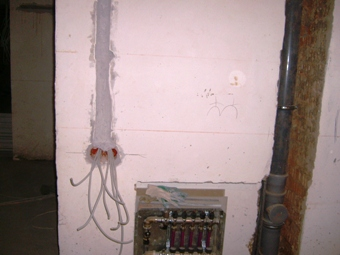

Автономное электроснабжение загородного дома и коттеджа.
Качественный электромонтаж в Санкт-Петербурге, стаж 12 лет. Частный электрик, недорого и качественно.
Тел. 8 904 642 08 57 Николай.

Квалифицированный мастер-электрик с большим профессиональным опытом предлагает свои услуги специалиста в различных объемах потенциальным заказчикам.
Согласно списка-перечня. По привлекательным расценкам даже для самых экономных и расчетливых заказчиков. Работаю быстро, качественно, с гарантией.

Осуществляю любые электрификационные мероприятия, связанные с монтажом-демонтажем, заменой и починкой электрической проводки, как внутреннего, так и внешнего типа; заменой и установкой розеток, выключателей, различного электрооборудования; подключением бытовых и осветительных приборов. Кроме того, выполняю контур заземления, а также организую автономное электроснабжение загородного дома и коттеджа, дачи.
Собственно говоря, организация автономного электроснабжения загородного дома или коттеджа - это дело исключительно для настоящих профессионалов. Поскольку от этого напрямую зависит функциональность строения, а также его безопасная эксплуатация.
Система автономного электроснабжения дома.
Именно поэтому, если вам дороги жизнь и здоровье ваших близких, не пытайтесь самостоятельно организовать электроснабжение собственного жилья. Не хватит, ни знаний, ни умения, ни опыта. И странные советы в интернете не помогут, даже если в статье будет заявлена "пошаговая" инструкция процесса.
Не пользуйтесь и сомнительными услугами дилетантов, которые говорят, что могут помочь за умеренное вознаграждение, а у самих нет ни соответствующего инструмента, ни образования, ни специальных допусков для работы на тех или иных объектах.
Электрик по загородным домам.
Обращайтесь за помощью только к опытным мастерам-электрикам. Ведь речь идет о вашем доме. А "самодеятельность" с электрической проводкой и организацией электроснабжения жилища может привести к трагическим последствиям. И это без преувеличения. Короткое замыкание чревато возгоранием, а нечаянное соприкосновение с небрежно проложенными проводами - гибелью членов вашей семьи.
Как опытный электромонтажник высочайшей квалификации, я всегда готов выполнить клиентский заказ любой сложности. Выезжаю на место проведения электрификационных мероприятий незамедлительно - по первому звонку потенциального заказчика.
Проект электроснабжения загородного дома.
Лично составляю проект предстоящей электрификации, с учетом всех планировочных и эксплуатационных особенностей частного загородного дома или коттеджа. А также с учетом пожеланий и финансовых возможностей клиента. Затем составляю смету предстоящих расходов и согласовываю ее с заказчиком. После чего сразу же приступаю к работе.
Делаю все качественно, на совесть, с гарантией последующей долгосрочной и абсолютно безопасной эксплуатации конкретного жилого помещения. Четко соблюдаю договорные сроки. В наличии имею все необходимое оборудование и профессиональный инструмент. Есть все разрешительные допуски для работы.
Сегодня услуги электриков и электромонтажников предлагают многие фирмы и мастера-частники.
Однако и перед теми, и перед другими я обладаю явными преимуществами. Во-первых, мои расценки существенно ниже, чем прайс организаций, поскольку у меня нет необходимости содержать штат сотрудников, арендовать большой офис и нести прочие накладные расходы, очень сильно влияющие на величину цен на оказываемые услуги.
Во-вторых, у меня за годы работы сложилась не только большая клиентская база, заказчики из которой могут положительно отозваться о моей работе. Но также появилась блестящая репутация, благодаря которой меня рекомендуют, как опытного высококвалифицированного мастера, родственникам, близким друзьям и хорошим знакомым.
Поэтому, если вам действительно требуются услуги частного электрика по организации автономного электроснабжения загородного жилого дома/коттеджа, обращайтесь! И я незамедлительно встречусь с вами, чтобы обсудить объем и условия работы.
Вы убедитесь, что я действую очень быстро.
И качество при этом не страдает. А еще я никогда не воспользуюсь неопытностью или неосведомленностью клиента, чтобы искусственно завысить пункты в смете затрат по его электрификационному проекту. Предпочитаю поддерживать партнерские отношения с заказчиком и всегда иду навстречу его пожеланиям.

- Поменять проводку в квартире.
- Сколько будут стоить материалы.
- Карта сайта.
- Замена электропроводки в панельном доме.
- Расценки на электропроводку квартир.
- Замена проводки в хрущевке.
- Электромонтаж в частном доме.
- Электрика в загородном доме.
- Сколько стоит замена электропроводки в двухкомнатной квартире?.
- Сколько стоит проложить проводку в 3 ком квартире?
- Сколько стоит проложить проводку в четырехкомнатной квартире?
- Сколько стоит сделать внутреннюю проводку?.
- Стоимость штробления стен.
- Установка люстр и светильников.
- Замена электропроводки в панельном доме.
- Электромонтаж проводов в бане.
- Электрика в загородном доме